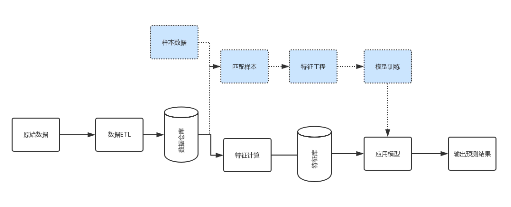

Paper: Willump
Model serving system(MLaaS)
机器学习作为一种服务。zhihu
应用实例
- Amazon ML平台： 完全自动化
- Amazon Sagemaker平台: 内附对数据科学家的有用tips哦！
- 微软的Azure平台
平台架构
机器学习，本质上是一系列的数值计算，因此 TensorFlow 定位也不是一个深度学习库，而是一个数值计算库。
机器学习中的命令式（Imperative）编程接口，是把公式提前推导出来，然后像其他编程脚本一样根据代码顺序执行。而我们知道 TensorFlow 提供的是一种声明式（Declarative）的编程接口，通过描述计算图的方式来延后和优化执行过程。
设计一个针对机器学习全流程的基础架构平台，需要涵盖哪些功能呢？
- 实现资源隔离。在一个共享底层计算资源的集群中，用户提交的训练任务不应该受到其他任务的影响，尽可能保证 CPU、内存、GPU 等资源隔离。
- 实现资源调度和共享。随着通用计算的 GPU 流行，目前支持 GPU 调度的编排工具也越来越多，而部分企业内还存在着 GPU 专卡专用的情况，无法实现资源的动态调度和共享，这必然导致计算资源的严重浪费。在设计机器学习平台时，需要尽可能考虑通用的集群共享场景，例如同时支持模型训练、模型存储以及模型服务等功能，可以对标的典例就是 Google Borg 系统。
- 平台需要有灵活的兼容性。目前机器学习业务发展迅速，针对不同场景的机器学习框架也越来越多，灵活的平台架构可以兼容几乎所有主流的应用框架，避免基础架构因为业务的发展而频繁变化。
- 需要实现机器学习场景下的 API 服务。针对机器学习的模型开发、模型训练和模型服务三个主要流程，我们可以定义提交训练任务、创建开发环境、启动模型服务、提交离线预测任务等 API，用熟悉的编程语言来实现 Web service 接口。
ML inference pipelines
图片来自：知乎

原始数据经过数据的ETL处理，入库到数据仓里。
上面蓝色部分代表机器学习：
- 首先把样本数据与我们的自有数据进行匹配，
- 然后洞察这份数据并生成特征，这个过程叫特征工程。
- 接下来基于这些特征，选择合适的算法训练后得到模型，
- 最终把模型具体应用到全量的数据中，输出预测的结果。
标准的机器学习工作流：针对业务上产生的具体问题，我们把它转化成数据问题，或者评估它能否用数据来解决。将数据导入并过滤后，我们需要将数据与业务问题和目标进行相关性分析，并根据具体情况对数据做二次处理。
下一步我们进行特征工程。从数据里找出跟目标有关的特征变量，从而构建或衍生出一些特征，同时要把无意义的特征剔除掉。我们大概需要花80%的时间在特征工程这个环节。
选出特征之后，我们会用逻辑回归和RNN等算法进行模型的训练。
接下来需要对模型做验证，判断其是否符合目标。不符合目标的原因有可能是数据和目标不相关，需要重新采集；也有可能是我们在探索的时候，工作不到位，因而需要对现有的数据重新探索，再进行特征工程这些步骤。如果最终模型符合业务预期，我们会把它应用在业务线上面。
Model Cascade
Compile
AST
zhihu 这篇讲得非常好！
abstract syntax tree (抽象语法树)实际上是一个解析树（parse tree）的精简版本。
一棵解析树是包含代码所有语法信息的树型结构，它是代码的直接翻译。所以解析树，也被成为具象语法树（Concret Syntax Tree, 简称CST）;而抽象语法树，忽略了一些解析树包含的一些语法信息，剥离掉一些不重要的细节，所以它看起并不像解析树那么事无巨细，这也是AST名字中抽象一词的由来。
一些解析树和抽象语法树的不同之处:
- AST不含有语法细节，比如冒号、括号、分号
- AST会压缩单继承节点
- 操作符会变成内部节点，不再会以叶子节点出现在树的末端。
有了抽象语法树，我们基于它可以建立清晰的代码描述，非常有利于后续阶段的修改、变换。
Weld
Weld 是一个用于数据计算的 Runtime，它的上层通常是一些计算框架，例如 Spark SQL、NumPy 等。用户用这些计算框架编写程序，这些框架将用户需要的计算翻译成 Weld 中间表示（IR），然后 Weld 对其进行一系列的优化，最后生成代码并编译运行。
就像 LLVM 的工作方式一样：各种语言的编译前端将高级语言翻译成 LLVM IR，LLVM 再对 IR 做一系列的优化，最后再编译成二进制。
特点
- Weld IR 是声明式的：只表达计算流程，不包含具体的实现。比如下面会提到的 Builder，上层不需要指定用什么方式构建数组或是哈希表等数据结构，这些是由 Weld 优化器决定的；
- Weld IR 是 Lazy 的：只有当需要输出结果时，相应的 DAG 计算才会真正开始运行。
Docker
推荐两个回答：刘允鹏和木头龙